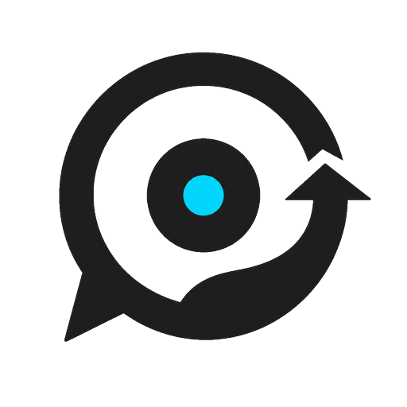
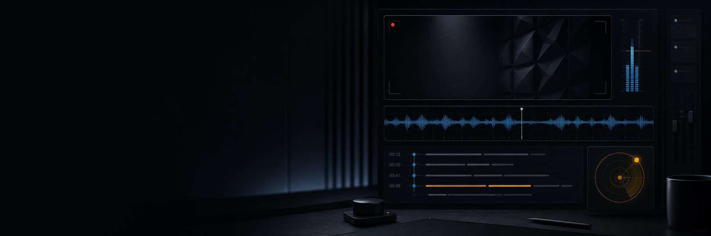

More than one goal
Journal and learn a language. Prepare for interviews and improve presentations. Your tracks can coexist.

Praxis View sourcePrivate practice, made concrete
Praxis is your private desktop studio for video journaling, language practice, and clearer communication. It turns one recording into one honest next step.
Linux x86_64 · MIT licensed · Your media stays on your machine

RecordingToday’s coaching note
You get clearer when each claim has one concrete example.01 Media stays yours
02 Transcription runs locally
03 You choose the AI
04 Practice carries forward
A tighter learning loop
Start with a camera and microphone preview. Pick the right devices and save locally from the first second.
Faster-Whisper creates a timestamped local transcript. Your chosen model reads the text, not your video.
Get one main lesson, real moments from your session, and a focused drill for the next recording.
Follow multiple goals at once—journal, language, interview, presentation—and see what changes over time.
Coach report / read this first
“Name the next action before you explain why it is difficult.”
Praxis keeps evidence close to the advice, so you can understand what happened and try again without decoding a complicated report.
Journal and learn a language. Prepare for interviews and improve presentations. Your tracks can coexist.
Change the goal or the model, then run a new report from the same session.
Create one-language or bilingual subtitles, translate with your model, and export a shareable MP4.
Privacy is the default
Videos, transcripts, reports, goals, and exports stay in a journal folder you choose. Credentials use your unlocked desktop keyring.
For analysis, Praxis sends only the text required to the provider and model you explicitly activate. Local transcription never uploads recordings.
Read the data model →Version 0.2.0